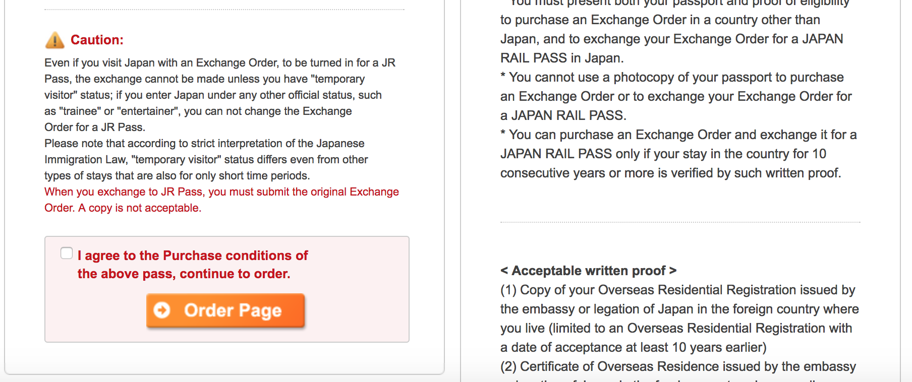
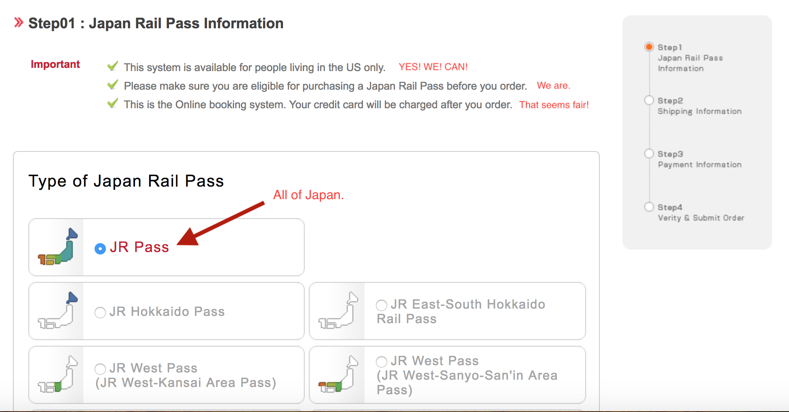
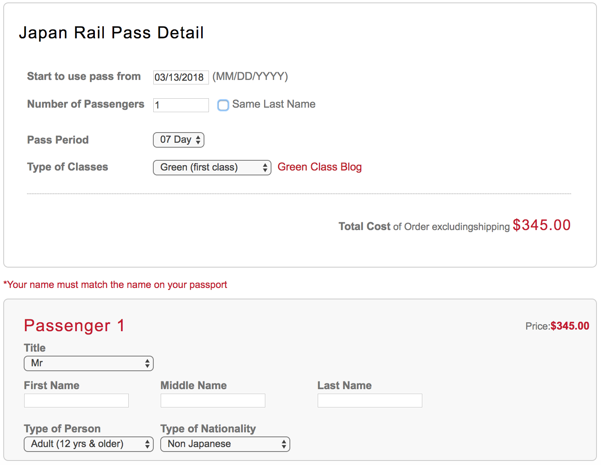
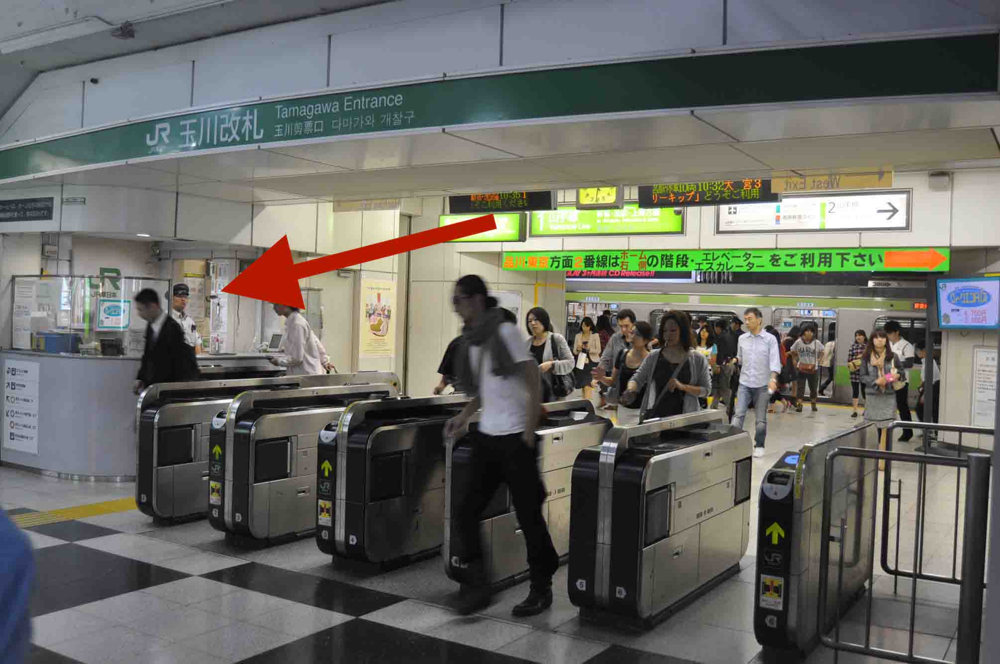

Hey you!
- Why here?
Because JTB is a real company that I've heard of!
Scroll down until you see this:
 tldr: You can use the pass because you'll be on the 90-day temporary visa you'll be receiving without prior application as a perk of being an American person from America (it ain't just us, but it's also us).
If you'd like some reassurance on that point, head here.
So! Get that checkbox :checked and let's proceed.
Next step:  
Your details should more or less match what's pictured-- we'll be getting green car (first-class) passes because why not. Here's a good article about the differences, and about using the shinkansen (bullet train) in general. Note that that site requires you to turn your adblocker off.
Anyway, you'll note that JTB asks you when you'll start to use the pass. I assume that this is only for enabling the validation they have in place that'll alert you if you're trying to buy one for use more than 90 days in the future, in which case you wouldn't be able to redeem it.
We won't actually need to redeem them or begin their terms of validity on the day selected here. So just go with 3/13 and we're set.
The rest of the form is straightforward. The cheapest shipping option is $9.50 (3-day Fedex), which is unfortunate, but I just went ahead with it. Feel free to shop around if you'd prefer-- a cheaper option I saw on a different site was for USPS shipping at $7, but by then I'd already filled out the JTB form and didn't care enough to switch.
Anyway! Do all that and you'll receive a confirmation email with your order details. And you should have your voucher in the mail in a few days.
Bring that (and your passport, which you won't get very far without) to Narita with us, and we'll exhange it for the actual pass once we arrive.
From that point, we'll be able to board most any JR train in Japan by showing the rail pass & our passports to station attendants. Which, to get you prepared, will usually occur in this kind of a scenario:

Go see that person over there.
We'll using the passes to make reservations and receive actual tickets for the shinkansen, though.